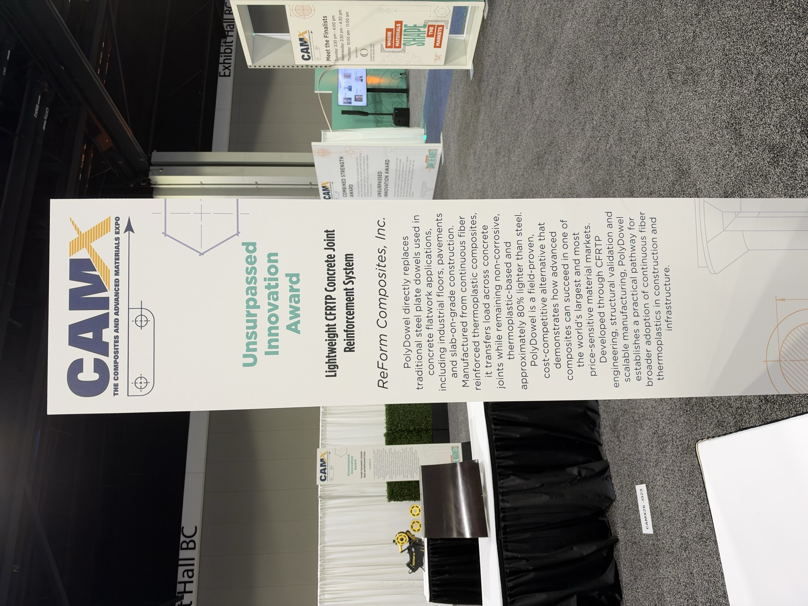
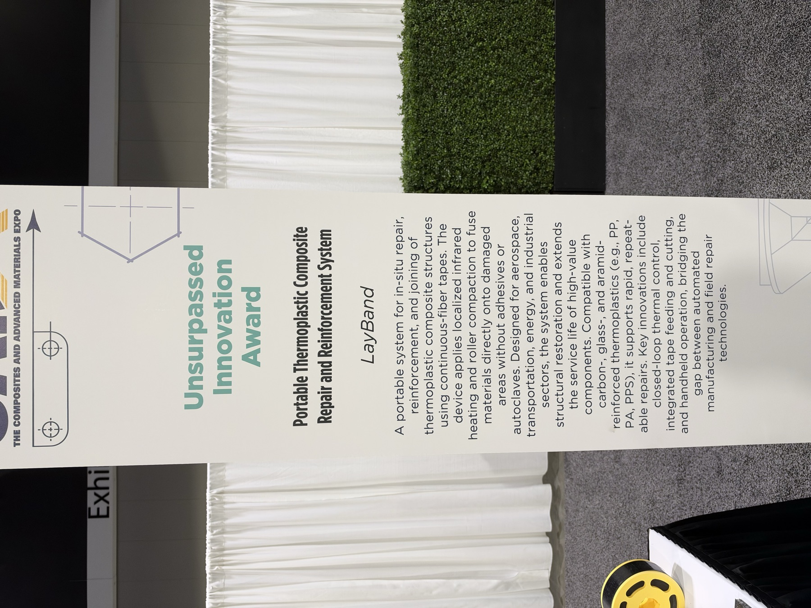
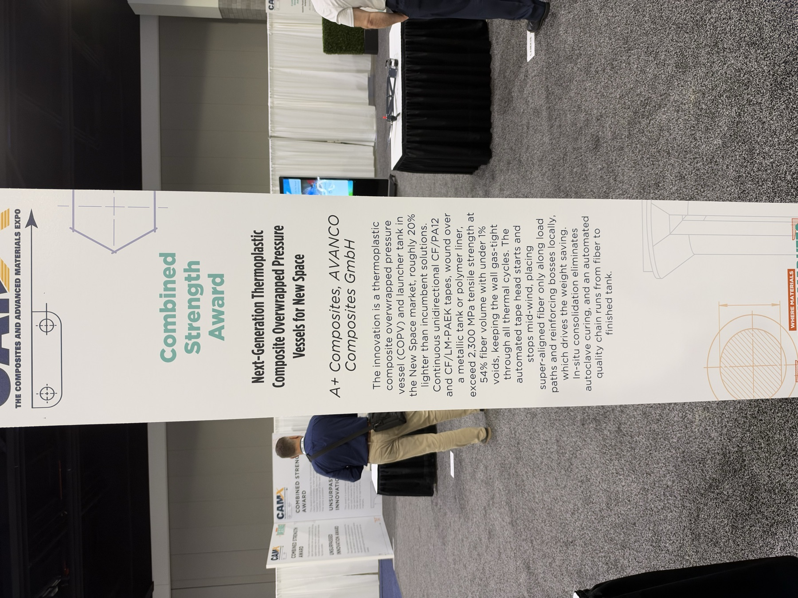
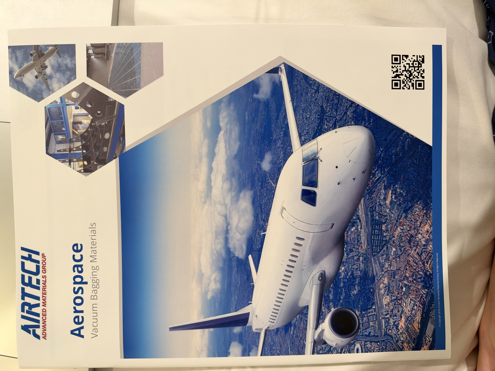
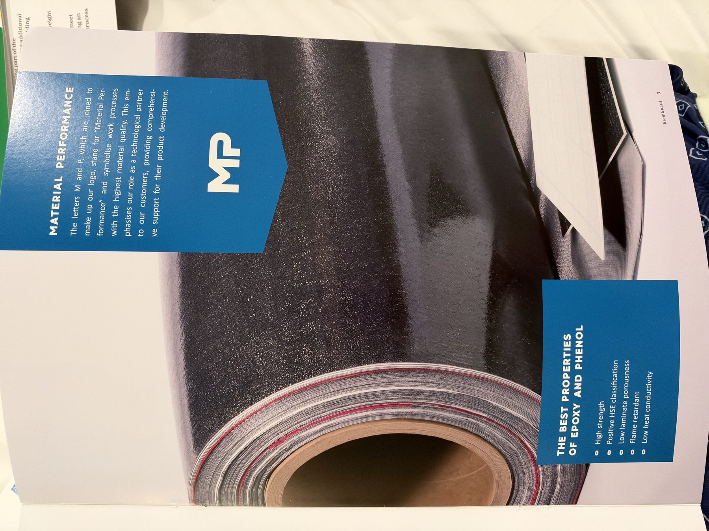
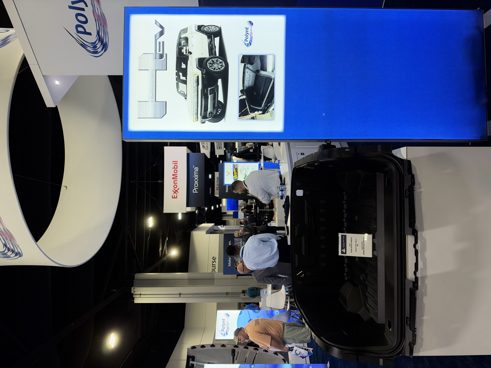
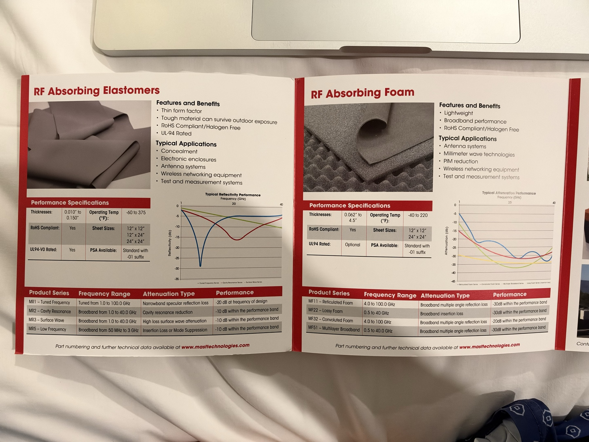
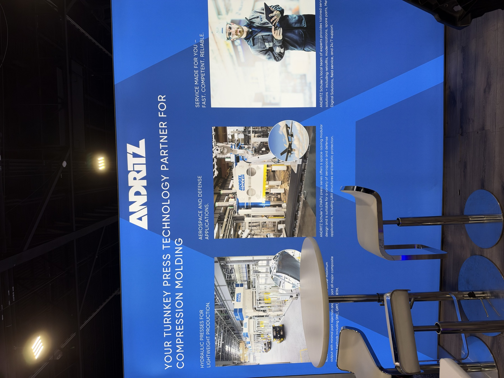
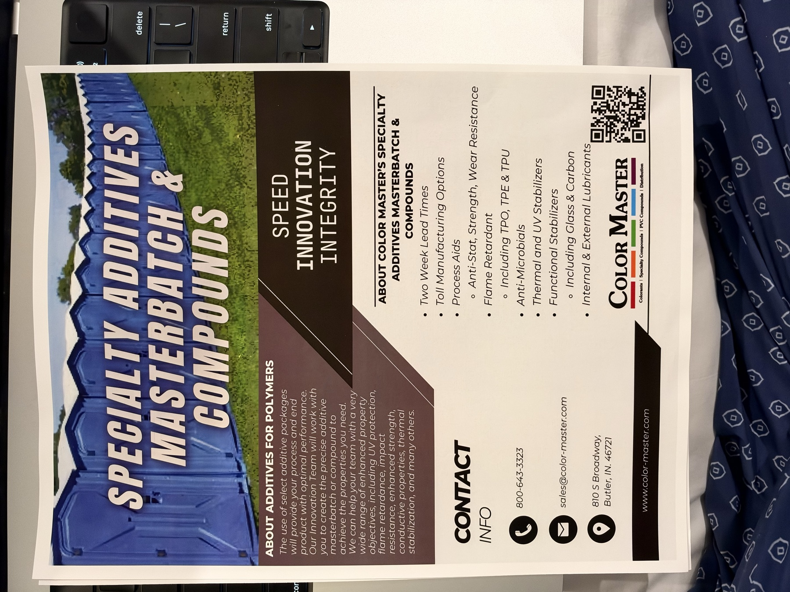
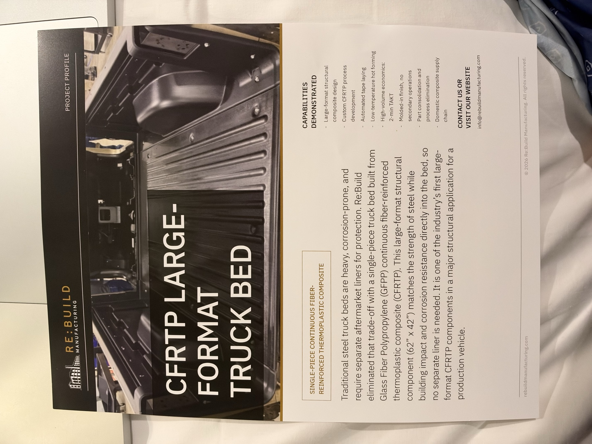

비교 관찰: James Cropper는 2025 대비 큰 변화가 없어 연속성 중심으로 관리
03
주요 업체 전체 목록
분야별 핵심 업체 17개를 선정해 유첨에서 업체별 1페이지로 정리했다.
No.
업체
분야
핵심 전시
판단
01
Airtech International
공정 · 소재 | 항공·우주 / 자동차
복합재 툴링·진공백 공정재
공정 안정화
02
STM · Swift Textile Metalizing
기능성 소재 · 부품 | 자동차 / 항공·우주
금속도금 섬유 기반 EMI 차폐 시트
북미 공급망
03
Teubert · CCM Technology
공정 · 장비 | 자동차 / 산업
연속 압축성형(CCM) 장비
연속 생산
04
Krempel
내화 소재 · 부품 | 자동차 / 철도 / 항공·우주
KremGuard 저연·저독성 프리프레그
배터리 안전
05
Polynt
소재 | 자동차
SMC/BMC 수지·컴파운드
양산 소재
06
AGCI · Kynol
내화 소재 | 자동차 / 산업
노볼로이드계 페놀 섬유·분말
원가 검토
07
Parson Adhesives
접착 · 공정 | 자동차 / 산업
고온 구조용 접착제
접합 기술
08
Highland · Kelvinite
내화 소재 · 부품 | 자동차
배터리 열폭주 차단용 수지·복합재
성능 우수 / 공정 리스크
09
Cotton Incorporated
소재 | 자동차
면섬유 강화 열가소성 복합재
천연섬유
10
ExxonMobil · Proxxima™
수지 · 공정 · 부품 | 자동차
저점도 폴리올레핀 열경화 수지·배터리 하우징
수상 연계 / 후속 미팅
11
MAST Technologies
기능성 소재 | 항공·우주 / 전자
RF 흡수체·EMI 차폐 엘라스토머/폼
전자파 대응
12
Vulcan Shield Global
내화 소재 | 자동차 / 산업
연속 알루미나 섬유 직물
맞춤 직조
13
ANDRITZ Schuler
공정 · 장비 | 자동차 / 항공·우주
SMC·GMT·RTM 압축성형 프레스
양산 설비
14
Color Master
첨가제 · 소재 | 자동차
난연·가공조제 MB 및 컴파운드
샘플 요청
15
James Cropper Advanced Materials
기능성 소재 | 자동차 / 항공·우주
TECNOFIRE·EMITEC·재활용 CF UNIMAT
2025 연속 관찰 / 수상 연계
16
Toray Group
소재 · 부품 | 자동차 / 항공·우주
CFRP 구조재·압력용기·열가소성 복합재
적용 확장
17
Re:Build Manufacturing
부품 · 공정 | 자동차 / 항공·우주
대형 CFRP 구조·자동화 제조
대형 부품
04
CAMX Awards 출품 기술
7개 현장 출품 확인
Re:Form Composites — 재활용 CFRP 기반 경량 화물 구조
Kaneka Aerospace — 달 표토 기반 소재·제조 개념
Re:Build Manufacturing — 휴대형 보강·자동 수리 시스템
연속 열가소성 복합재 — 연속 프로파일 및 링 구조
ExxonMobil Proxxima™ — 고속 함침 배터리 하우징
James Cropper UNIMAT — 정렬형 재활용 탄소섬유 소재
Combined Strength — 압력용기·토우 기반 구조
Awards는 업체 자체가 아니라 기술 출품·선정 프로그램이다. 본 보고서에서는 기술 의미가 큰 ExxonMobil과 James Cropper를 업체 상세 페이지에 연결했다.



05
Airtech International
공정 · 소재 | 항공·우주 / 자동차
부스AA8
핵심 제품복합재 툴링·진공백 공정재
검토 상태공정 안정화
확인 내용
BMG Carbon Prepreg 기반 툴링과 고온용 진공백 공정 솔루션을 전시.
대형 부품의 반복 성형에서 치수 안정성과 툴 수명 개선에 초점.
부품 소재 자체보다 양산 공정의 재현성과 보조재 통합 역량이 핵심.
CAMX 2026 현장 촬영

CAMX 2026 현장 촬영
TAKE AWAY
대형 복합재 부품의 양산성 검토 시 툴링 수명·사이클·보조재 표준화를 함께 비교할 필요.
Sources: 현장 촬영·브로슈어 / airtech.com
06
STM · Swift Textile Metalizing
기능성 소재 · 부품 | 자동차 / 항공·우주
부스—
핵심 제품금속도금 섬유 기반 EMI 차폐 시트
검토 상태북미 공급망
확인 내용
섬유 한 올씩 금속층을 형성하는 EnCap 공정으로 유연성과 전도성을 동시에 확보.
시트·테이프·직물 형태로 전장 부품과 배터리 주변 EMI/RF 차폐 적용 가능.
100% 북미 현지 생산이라는 점이 조달 안정성과 현지화 측면에서 의미가 큼.
CAMX 2026 현장 촬영CAMX 2026 현장 촬영
TAKE AWAY
경량 EMI 차폐가 필요한 배터리·전장 하우징에서 금속판 대체 가능성과 성형·접합성을 우선 확인.
Sources: 현장 촬영 / swift-textile.com
07
Teubert · CCM Technology
공정 · 장비 | 자동차 / 산업
부스—
핵심 제품연속 압축성형(CCM) 장비
검토 상태연속 생산
확인 내용
열가소성 필름·UD 테이프·직접 용융 사출을 이용한 연속 프로파일 성형.
곡률·가변 단면을 포함한 복잡 형상과 2단 압축 공정에 대응.
최대 25 bar·500°C, 낮은 기공률을 지향해 연속 생산성과 품질 재현성을 강조.
CAMX 2026 현장 촬영CAMX 2026 현장 촬영
TAKE AWAY
배터리 프레임·보강재처럼 길이가 긴 부품에서 압출 대비 섬유 연속성과 단면 자유도가 장점.
Sources: 현장 촬영 / teubert.de/en/composites
08
Krempel
내화 소재 · 부품 | 자동차 / 철도 / 항공·우주
부스—
핵심 제품KremGuard 저연·저독성 프리프레그
검토 상태배터리 안전
확인 내용
할로겐·페놀·포름알데히드가 없는 에폭시 프리프레그로 높은 FST 성능을 지향.
구조재와 허니컴 패널에 적용 가능하며 자동차 배터리 하우징 적용을 제시.
난연 규격 대응과 함께 구조 강성·성형성의 균형을 제품군으로 보여줌.
CAMX 2026 현장 촬영

CAMX 2026 현장 촬영
TAKE AWAY
내화 단일 성능보다 구조재 일체화와 저연·저독성까지 포함한 배터리 하우징 평가 기준이 확대됨.
Sources: 현장 촬영 / krempel.com/en/products/composites/kremguard
09
Polynt
소재 | 자동차
부스—
핵심 제품SMC/BMC 수지·컴파운드
검토 상태양산 소재
확인 내용
자동차 외장·구조 부품용 SMC/BMC 소재와 성형 샘플을 전시.
표면 품질, 치수 안정성, 대량 압축성형에 적합한 수지 설계가 중심.
기존 금속 부품의 경량화뿐 아니라 부품 통합과 도장 품질까지 함께 제안.
CAMX 2026 현장 촬영

CAMX 2026 현장 촬영
TAKE AWAY
현행 SMC 양산 기술과 직접 비교 가능한 기준 업체로, 표면·사이클·재활용 대응을 확인할 가치가 큼.
Sources: 현장 촬영 / polynt.com
10
AGCI · Kynol
내화 소재 | 자동차 / 산업
부스—
핵심 제품노볼로이드계 페놀 섬유·분말
검토 상태원가 검토
확인 내용
용융되지 않고 수축과 연기 발생이 낮은 Kynol 노볼로이드 섬유를 전시.
섬유·직물·분말 형태로 엘라스토머 및 수지계와의 상용성이 우수.
현장 협의 기준 아라미드 섬유 대비 가격 차이가 크지 않아 경제성 우위는 제한적.
CAMX 2026 현장 촬영CAMX 2026 현장 촬영
TAKE AWAY
엘라스토머 복합화는 유망하나 동일 성능 기준의 아라미드 대비 원가·가공성 비교가 선행돼야 함.
Sources: 현장 촬영·상담 / kynol.com
11
Parson Adhesives
접착 · 공정 | 자동차 / 산업
부스—
핵심 제품고온 구조용 접착제
검토 상태접합 기술
확인 내용
GF–GF, GF–Metal, Metal–Metal 이종재 접합용 구조용 접착제를 전시.
현장 설명 기준 400°F(약 204°C) 이상에서도 접착력 유지 성능을 강조.
기계적 체결을 줄여 경량화와 응력 분산에 유리하나 표면처리·경화 조건 검증이 필요.
CAMX 2026 현장 촬영CAMX 2026 현장 촬영
TAKE AWAY
배터리 케이스와 복합재 구조물의 이종재 접합 후보로 고온 노화·열사이클 시험을 제안.
Sources: 현장 촬영·상담 / parsonadhesives.com
12
Highland · Kelvinite
내화 소재 · 부품 | 자동차
부스N12
핵심 제품배터리 열폭주 차단용 수지·복합재
검토 상태성능 우수 / 공정 리스크
확인 내용
회사 자료상 K2100은 할로겐·안티몬·브롬이 없는 팽창성 FRPP로, 0.25 mm에서 UL 94 VTM-0, 0.43 mm에서 V-0를 충족하며 탄화·무적하 방식으로 화염 장벽을 형성.
Composite Flame Shield는 팽창성층과 구조층을 조합한 다단 차열 구조이며, 회사는 UL 2596 Torch & Grit 10회 전 사이클 통과와 셀 간 열폭주 전파 억제를 제시. K2100/2200 시트·롤, 사출·압출 컴파운드 및 맞춤 복합재로 공급 가능.
기존 사용 경험을 바탕으로 현장에서는 BETR 통과 샘플과 커스터마이징 가능성을 확인. 미국 생산, 회사 기준 4주 리드타임도 공급 측면의 장점.
다만 전시 샘플은 보강 직물 내부에 수지가 거의 침투하지 않아 큰 공극과 층간 불연속이 관찰됨. 내화성은 우수하지만 함침성·접착·성형 재현성·사이클타임은 여전히 양산 병목.
CAMX 2026 현장 촬영CAMX 2026 현장 촬영CAMX 2026 현장 촬영
TAKE AWAY
회사 공인 난연·전기 절연 성능과 실제 복합재 제조성은 별도로 평가해야 한다. 다음 단계는 공극률 단면 분석, 수지 유동/점도, 층간강도 및 양산 사이클 검증.
Sources: 현장 촬영·상담 / Highland Plastics Kelvinite 공식 제품자료(2026-09 확인)
13
Cotton Incorporated
소재 | 자동차
부스D31
핵심 제품면섬유 강화 열가소성 복합재
검토 상태천연섬유
확인 내용
면섬유를 PP 등 열가소성 수지의 보강재로 활용한 성형 패널을 전시.
경량, 낮은 열전도, 촉감과 지속가능성을 자동차 내장재 가치로 제시.
표준 성형 공정 적용 가능성을 강조하나 흡습·냄새·장기 내구 관리가 중요.
CAMX 2026 현장 촬영CAMX 2026 현장 촬영
TAKE AWAY
내장재의 저탄소·감성 품질에는 적합하며, 구조부품보다 비구조 패널에서 우선 검토 가능.
Sources: 현장 촬영 / cottonworks.com/product-innovation/advanced-materials/
14
ExxonMobil · Proxxima™
수지 · 공정 · 부품 | 자동차
부스U6
핵심 제품저점도 폴리올레핀 열경화 수지·배터리 하우징
검토 상태수상 연계 / 후속 미팅
확인 내용
약 20 cP까지 낮춘 2액형 폴리올레핀 열경화 수지로 빠른 함침과 제어 가능한 경화를 제시.
HP-RTM·Wet Compression·Pultrusion 등 다양한 공정과 유리·탄소·천연섬유에 대응.
배터리 하우징과 구조 부품에서 짧은 사이클, 내충격·내약품성을 결합한 적용을 강조.
CAMX Awards 출품 기술로 주목됐으며 다음 주 기술 미팅에서 재료·공정 세부를 확인할 예정.
CAMX 2026 현장 촬영CAMX 2026 현장 촬영CAMX 2026 현장 촬영
TAKE AWAY
자동차 복합재의 핵심 병목인 빠른 함침과 사이클 단축을 동시에 겨냥한 우선 검토 대상.
Sources: 현장 촬영 / proxxima.com / Fraunhofer ICT
15
MAST Technologies
기능성 소재 | 항공·우주 / 전자
부스D19
핵심 제품RF 흡수체·EMI 차폐 엘라스토머/폼
검토 상태전자파 대응
확인 내용
주파수 대역별 RF 흡수 엘라스토머·폼과 차폐 소재를 전시.
소재 배합부터 시험까지 내부 수행해 응용 조건에 맞춘 커스터마이징을 강조.
레이더·통신·고전압 전장 증가에 따라 구조 복합재와 기능층의 통합 수요를 보여줌.
CAMX 2026 현장 촬영

CAMX 2026 현장 촬영
TAKE AWAY
차폐뿐 아니라 흡수 성능을 설계하는 소재로, 전장 하우징의 주파수별 요구 정의가 먼저 필요.
Sources: 현장 촬영 / masttechnologies.com
16
Vulcan Shield Global
내화 소재 | 자동차 / 산업
부스—
핵심 제품연속 알루미나 섬유 직물
검토 상태맞춤 직조
확인 내용
약 1,200°C 연속 사용을 목표로 하는 연속 알루미나 섬유 직물을 전시.
평직·능직·3D 직조 등 요구 형상과 중량으로 맞춤 제작 가능.
중국계 공급 배경을 가지면서 싱가포르 본사와 헝가리 유럽 생산 거점을 운영.
배터리 화염 차단층에 적용 가능하나 취급성·수지 함침·원가 검증이 필요.
CAMX 2026 현장 촬영CAMX 2026 현장 촬영
TAKE AWAY
고온 차단 성능과 맞춤 직조가 강점이며, 자사 공정에 맞는 폭·두께·표면처리 샘플 확보가 우선.
Sources: 현장 촬영·상담 / vulcanshield.com
17
ANDRITZ Schuler
공정 · 장비 | 자동차 / 항공·우주
부스D20
핵심 제품SMC·GMT·RTM 압축성형 프레스
검토 상태양산 설비
확인 내용
SMC·GMT·RTM 부품용 유압 프레스와 턴키 압축성형 시스템을 제시.
공정 데이터 추적, 원격 유지보수, 에너지 모니터링 등 디지털 운영을 통합.
대형 구조 부품에서 압력·온도·평행도 재현성과 자동화가 품질 경쟁력의 중심.
CAMX 2026 현장 촬영

CAMX 2026 현장 촬영
TAKE AWAY
소재 전환만으로는 양산성이 확보되지 않으며, 프레스·이송·추적 시스템을 포함한 셀 단위 최적화가 필요.
Sources: 현장 촬영 / ANDRITZ Lightweight Technologies brochure
18
Color Master
첨가제 · 소재 | 자동차
부스E9
핵심 제품난연·가공조제 MB 및 컴파운드
검토 상태샘플 요청
확인 내용
색상 농축제와 난연·가공조제 마스터배치, 컴파운드 제품군을 전시.
할로겐·비할로겐 난연 시스템을 수지와 공정 조건에 맞춰 설계 가능.
추후 난연제 및 Processing Aid의 MB·Powder 타입 정보와 샘플을 요청할 계획.
CAMX 2026 현장 촬영

CAMX 2026 현장 촬영
TAKE AWAY
자사 수지·섬유 시스템에서 분산성, 물성 저하, 표면 품질을 비교할 소량 샘플 평가가 적절.
Sources: 현장 촬영·상담 / color-master.com
19
James Cropper Advanced Materials
기능성 소재 | 자동차 / 항공·우주
부스EE20
핵심 제품TECNOFIRE·EMITEC·재활용 CF UNIMAT
검토 상태2025 연속 관찰 / 수상 연계
확인 내용
2025년 참관 주요 업체로, TECNOFIRE 내화재와 EMITEC 전도성 베일의 큰 방향 변화는 없음.
재활용·공정 스크랩 탄소섬유를 정렬한 UNIMAT와 VECTIS 정렬 기술을 전시.
CAMX Awards 출품은 재활용 탄소섬유의 성능 활용도를 높인 정렬형 소재가 핵심.
기존 내화·전도 기능재와 재활용 보강재를 포트폴리오로 묶는 방향이 확인됨.
CAMX 2026 현장 촬영CAMX 2026 현장 촬영
TAKE AWAY
신규성보다 기술 완성도와 제품군 확장이 의미 있으며, 기존 평가 결과와 연속 비교가 적절.
Sources: 현장 촬영 / advancedmaterials.jamescropper.com
20
Toray Group
소재 · 부품 | 자동차 / 항공·우주
부스—
핵심 제품CFRP 구조재·압력용기·열가소성 복합재
검토 상태적용 확장
확인 내용
압력용기 오버랩, 자전거 프레임, 압축성형 판재 등 다양한 CFRP 응용을 전시.
고성능 섬유에서 중간재·성형품까지 연결하는 수직 통합 역량이 강점.
모빌리티에서는 고압 저장·경량 구조와 빠른 성형이 동시에 요구되는 흐름을 보여줌.
CAMX 2026 현장 촬영CAMX 2026 현장 촬영
TAKE AWAY
단일 소재 성능보다 중간재 형태와 성형 공정까지 포함한 시스템 제안이 대형 공급사의 차별점.
Sources: 현장 촬영 / toray.com
21
Re:Build Manufacturing
부품 · 공정 | 자동차 / 항공·우주
부스—
핵심 제품대형 CFRP 구조·자동화 제조
검토 상태대형 부품
확인 내용
대형 CFRP 적재함과 구조 부품을 통해 설계·공정·생산 통합 역량을 전시.
대형 부품의 경량화와 부품 수 절감을 실제 형상으로 제시.
재료 공급보다 설계에서 양산 셀까지 연결하는 제조 서비스 모델이 핵심.
CAMX 2026 현장 촬영

CAMX 2026 현장 촬영
TAKE AWAY
대형 자동차 부품의 사업화에는 소재 선정과 동시에 설계·치공구·자동화 파트너 구조가 중요.